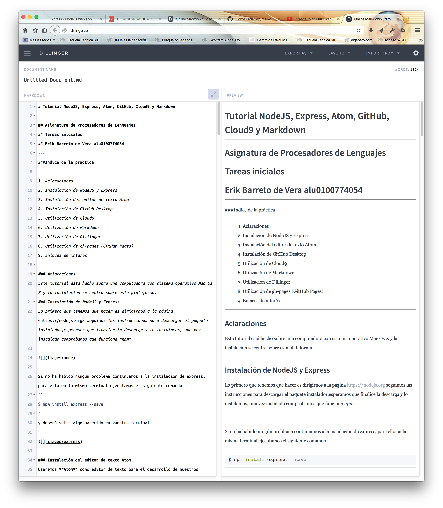

###Indice de la práctica
Este tutorial está hecho sobre una computadora con sistema operativo Mac Os X y la instalación se centra sobre esta plataforma.
Lo primero que tenemos que hacer es dirigirnos a la página https://nodejs.org seguimos las instrucciones para descargar el paquete instalador,esperamos que finalice la descarga y lo instalamos, una vez instalado comprobamos que funciona npm
Si no ha habido ningún problema continuamos a la instalación de express, para ello en la misma terminal ejecutamos el siguiente comando
$ npm install express --save
y deberá salir algo parecido en vuestra terminal
Usaremos Atom como editor de texto para el desarrollo de nuestros proyectos. Para ello nos dirigimos a https://atom.io para descargar el editor siguiendo las instrucciones de la página.
GitHub tiene una aplicación de escritorio multiplataforma que permite administrar los repositorios de una manera sencilla desde su interfaz. Para instalar la aplicación vamos a https://desktop.github.com y seguimos las instrucciones para descargar el instalador de la página.
Una vez lo hayamos instalado nos pedirá si poseemos una cuenta de GitHub, en caso de serlo, introducimos los datos, en caso contrario, debemos crear una cuenta o bien desde la interfaz de la aplicación o bien vamos a la página https://github.com/ y seguimos los pasos para introducir los datos de nuestra nueva cuenta, una vez hayamos terminado podremos usar nuestra aplicación de escritorio.
Antes de comenzar veamos…¿Que beneficios nos aporta?
Nos dirigimos a Cloud 9 IDE

deberemos crearnos una cuenta si no tenemos ya, seguimos las instrucciones del formulario y una vez creado debe aparecernos algo como:

Aquí vamos a tener que realizar dos acciones:


Table of Contents
# H1
## H2
### H3
#### H4
##### H5
###### H6
Alternatively, for H1 and H2, an underline-ish style:
Alt-H1
======
Alt-H2
------
Alternatively, for H1 and H2, an underline-ish style:
Emphasis, aka italics, with *asterisks* or _underscores_.
Strong emphasis, aka bold, with **asterisks** or __underscores__.
Combined emphasis with **asterisks and _underscores_**.
Strikethrough uses two tildes. ~~Scratch this.~~
Emphasis, aka italics, with asterisks or underscores.
Strong emphasis, aka bold, with asterisks or underscores.
Combined emphasis with asterisks and underscores.
Strikethrough uses two tildes. Scratch this.
Emphasis, aka italics, with asterisks or underscores.
Strong emphasis, aka bold, with asterisks or underscores.
Combined emphasis with asterisks and underscores.
Strikethrough uses two tildes. Scratch this.
Emphasis, aka italics, with asterisks or underscores.
Strong emphasis, aka bold, with asterisks or underscores.
Combined emphasis with asterisks and underscores.
1. First ordered list item
2. Another item
* Unordered sub-list.
1. Actual numbers don't matter, just that it's a number
1. Ordered sub-list
4. And another item.
Some text that should be aligned with the above item.
* Unordered list can use asterisks
- Or minuses
+ Or pluses
First ordered list item
Another item
Unordered sub-list.
Actual numbers don't matter, just that it's a number
Ordered sub-list
And another item.
Some text that should be aligned with the above item.
Unordered list can use asterisks
Or minuses
Or pluses
Actual numbers don’t matter, just that it’s a number
Ordered sub-list
And another item.
Some text that should be aligned with the above item.
Or pluses
First ordered list item Another item Unordered sub-list. Actual numbers don’t matter, just that it’s a number Ordered sub-list
And another item.
Some text that should be aligned with the above item.
Unordered list can use asterisks Or minuses Or pluses
[I'm an inline-style link](https://www.google.com)
[I'm a reference-style link][Arbitrary case-insensitive reference text]
[You can use numbers for reference-style link definitions][1]
Or leave it empty and use the [link text itself]
URLs and URLs in angle brackets will automatically get turned into links.
http://www.example.com or <http://www.example.com> and sometimes
example.com (but not on Github, for example).
Some text to show that the reference links can follow later.
[arbitrary case-insensitive reference text]: https://www.mozilla.org
[1]: http://slashdot.org
[link text itself]: http://www.reddit.com
You can use numbers for reference-style link definitions
Or leave it empty and use the link text itself
URLs and URLs in angle brackets will automatically get turned into links. http://www.example.com or http://www.example.com and sometimes example.com (but not on Github, for example).
Some text to show that the reference links can follow later.
Here's our logo (hover to see the title text):
Inline-style:

Reference-style:
![alt text][logo]
[logo]: https://github.com/adam-p/markdown-here/raw/master/src/common/images/icon48.png "Logo Title Text 2"
Inline-style:

Reference-style:
```javascript
var s = "JavaScript syntax highlighting";
alert(s);```
Colons can be used to align columns.
| Tables | Are | Cool |
| ------------- |:-------------:| -----:|
| col 3 is | right-aligned | $1600 |
| col 2 is | centered | $12 |
| zebra stripes | are neat | $1 |
The outer pipes (|) are optional, and you don't need to make the raw Markdown line up prettily. You can also use inline Markdown.
Markdown | Less | Pretty
--- | --- | ---
*Still* | `renders` | **nicely**
1 | 2 | 3
Colons can be used to align columns.
| Tables | Are | Cool |
|---|---|---|
| col 3 is | right-aligned | $1600 |
| col 2 is | centered | $12 |
| zebra stripes | are neat | $1 |
The outer pipes (|) are optional, and you don’t need to make the raw Markdown line up prettily. You can also use inline Markdown.
| Markdown | Less | Pretty |
|---|---|---|
| Still | renders |
nicely |
| 1 | 2 | 3 |
> This line is part of the same quote.
Quote break.
> This is a very long line that will still be quoted properly when it wraps. Oh boy let's keep writing to make sure this is long enough to actually wrap for everyone. Oh, you can *put* **Markdown** into a blockquote.
Blockquotes are very handy in email to emulate reply text. This line is part of the same quote.
Quote break.
This is a very long line that will still be quoted properly when it wraps. Oh boy let’s keep writing to make sure this is long enough to actually wrap for everyone. Oh, you can put Markdown into a blockquote.
Three or more...
---
Hyphens
***
Asterisks
___
Underscores
Three or more…
Hyphens
Asterisks
Underscores
Es un editor de Markdown online que permite escribir contenido en formato Markdown en uno de sus paneles y previsualizar el resultado en otro panel, como características está que permite exportarlo en formato HTML o pdf y también guardarlo en servicios en la nube como son DropBox o Google Drive, GitHub, etc.

¿Qué es gh-pages?: Son páginas para ti y para tus proyectos, alojadas directamente en tu repositorio de GitHub: sólo tienes que editar, pushear y los cambios ya estarán disponibles.
¿Cómo se utiliza?: Sólo debes seguir los siguientes pasos en el repositorio de GitHub al que quieras añadir una página:
- Creamos una rama con el nombre ‘gh-pages’:
- Crea un nuevo fichero
- Llama al fichero index.html
- Haz un commit para el nuevo fichero
- Listo, ahora puedes acceder con la URL ’http://tu-usuario.github.io/nombre-del-repositorio’
Recursos: